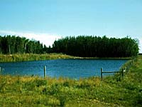

One of two types of licenses can be obtained:
1. Private Aquaculture License - no charge
A private license grants the holder fish farming rights for his personal use and that of his friends. he may not sell, barter or trade his fish. it is intended for persons who have a dugout or small pond on their property and who wish to stock it to provide recreation and fish for consumption.
2. Commercial Aquaculture License - $15.00 fee
A commercial license grants the holder rights for any of the following types of operations:
a) To stock and harvest fish for commercial market sale. The fish may be sold directly to local consumers or to wholesalers, retailers, restaurants, and Special Dealers, providing they have been processed in licensed fish processing plants within the province.
Those intending to sell fish outside the province must obtain a special dealers license.
b) To stock fish in a water body for sale to the public by means of angling, commonly known as "U-catch-'em" or "fee-for-fishing" pond. People angling at these places do not require a provincial angling license, but must retain a receipt showing the source of the fish for their own protection.
c) to act as a broker, importing live fish from suppliers outside the province and reselling them in smaller lots to private or commercial fish farmers in Saskatchewan.

Once you have determined the type of aquaculture license you require, it can be obtained by completing the appropriate application from. These are available from any fisheries branch. The exact process is outlined in the booklet "Aquaculture in Saskatchewan: Dugouts and Ponds" available from Saskatchewan Environment and Resource Management.
|
|